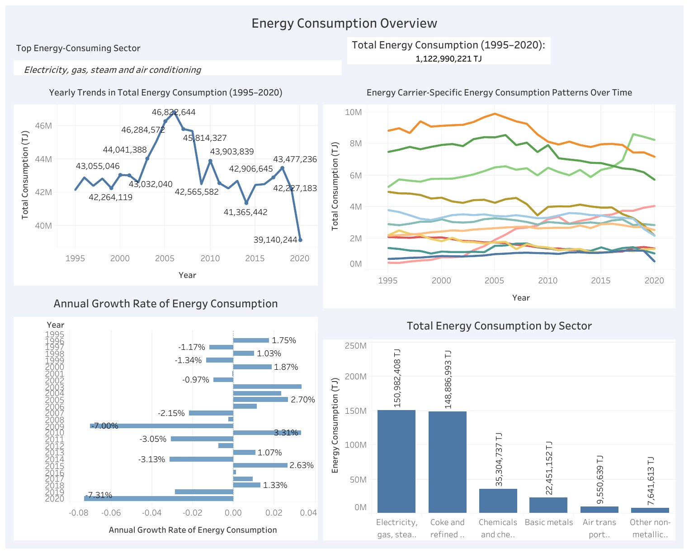
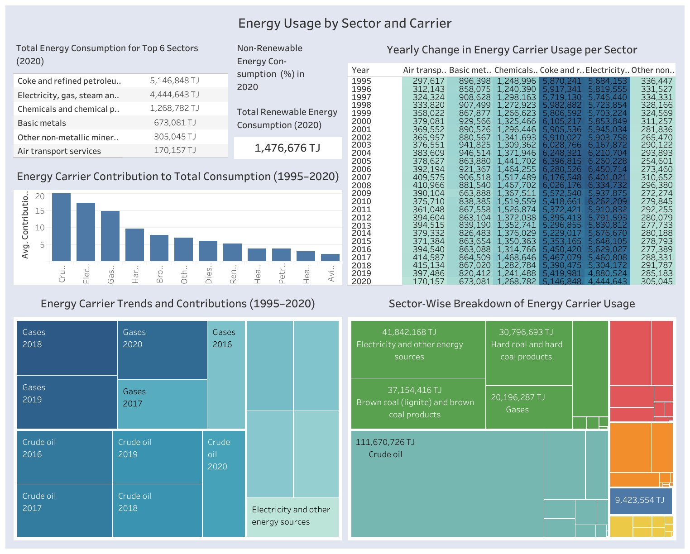
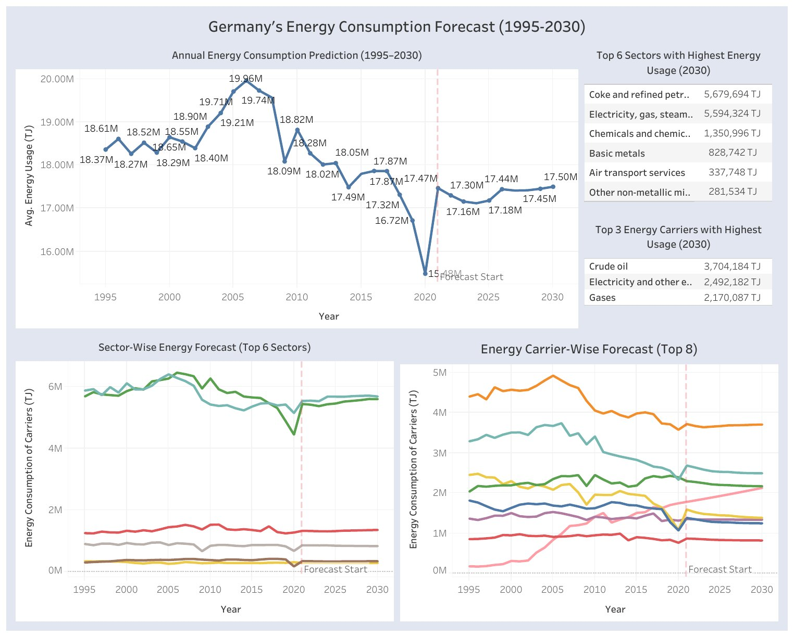
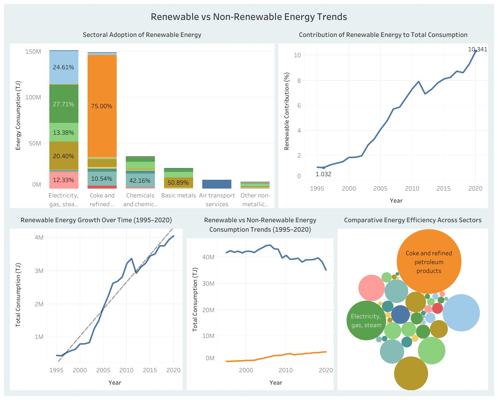

Forecasting Germany's Energy Consumption to 2030
Python, LSTM, SQL, Tableau · MSc dissertation, BSBI 2025
Sector and carrier-level forecasts of German energy demand, built on 26 years of Destatis data covering 48 production branches and 12 energy carriers, totalling 1.12 billion terajoules of recorded consumption. Random Forest, XGBoost, Bi-GRU and LSTM were compared on chronological train and test splits using MSE, RMSE, MAE and MAPE. Three stacked LSTM networks produced the final 2021 to 2030 forecasts for total, sector and carrier demand, predicting recursively by feeding each year back in as input for the next. Four Tableau dashboards carry the results.
Consumption overview, 1995 to 2020
{kind=link}

Two sectors dominate and are almost evenly matched: electricity, gas, steam and air conditioning at 150.98M TJ and coke and refined petroleum products at 148.89M TJ, against 35.30M TJ for the next largest. Annual growth swings widely, from -7.31% to +3.31%, with the sharpest contractions in the 2009 downturn and again in 2020.
Sector and carrier breakdown
{kind=link}

Crude oil is by far the largest carrier across the period at 111.67M TJ, ahead of electricity and other energy sources at 41.84M TJ, brown coal at 37.15M TJ and hard coal at 30.80M TJ. Total renewable consumption reached 1.48M TJ in 2020. The year-by-year matrix makes the divergence legible: carriers holding steady, carriers in structural decline, and renewables climbing from a near-zero base.
Forecast to 2030
{kind=link}

Demand flattens rather than falls. The annual model projects total use settling between roughly 17,100 and 17,500 petajoules per year through 2030, well below the 2006 peak but above the 2020 low of 15,480. Crude oil remains the largest single carrier in 2030 at 3.70M TJ, ahead of electricity at 2.49M TJ and gases at 2.17M TJ. That is the finding with the most direct policy weight: on consumption trends alone, the carrier mix does not invert within the decade.
Renewable transition
{kind=link}

Renewables grew from 1.03% of total consumption in 1995 to 10.34% in 2020, a tenfold rise from a very small base. Adoption is deeply uneven by sector, ranging from 10.54% to 75.00%: services and commercial activities moved fastest, energy-intensive industries running high-temperature processes lag furthest behind, and transport still runs mainly on diesel and petrol.
Forecast checked against published figures
| Year | Forecast | Published |
|---|---|---|
| 2021 | 17,470 | 15,935 |
| 2022 | 17,301 | 15,421 |
| 2023 | 17,159 | 14,905 |
The model ran 10 to 15% high. A network trained only on consumption history cannot see the post-COVID economy, coal plants closing earlier than planned, or new renewable incentives. Published figures from AG Energiebilanzen. The size and direction of the gap is the argument for adding econometric and policy inputs to the next version.